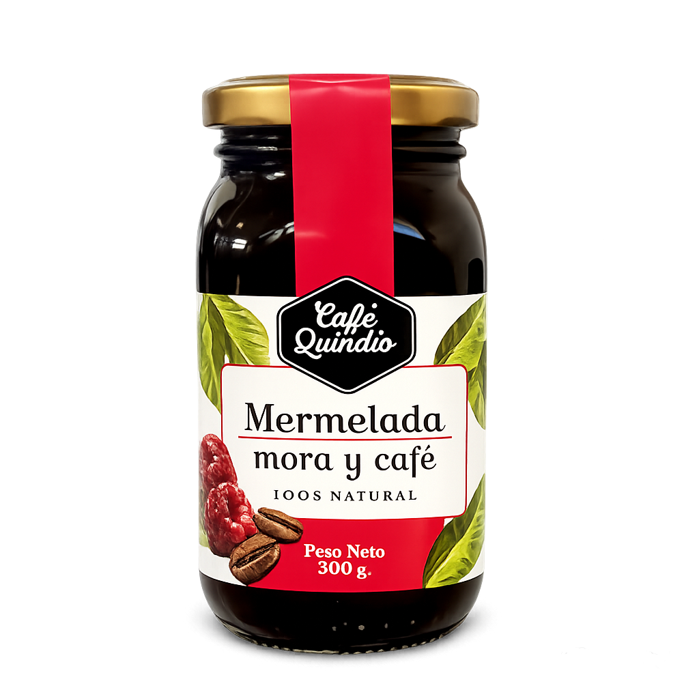

Producto untable obtenido mediante la cocción lenta y controlada de moras seleccionadas en su punto óptimo de maduración, fusionado homogéneamente con un extracto concentrado de café de alta calidad, resultando en un equilibrio perfecto entre la acidez frutal y las notas tostadas del grano.